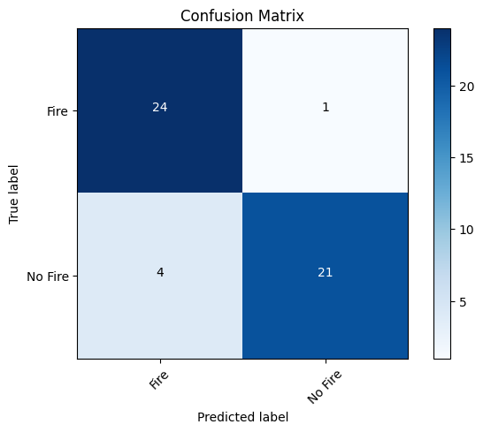
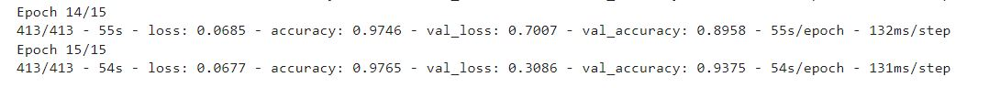

Video Demo:
Model Performance on test dataset
Model Prediction Accuracy: 90%
Confusion Matrix:

Model Architecture
Used Keras to Implemented the VGG16 Architecture, with 2 nodes at the output layer to tailor to the binary classification task
Model training results:

Model Limitations:
The training data set only contains images of trees/forests not on fire for the "Non_fire" training set. Inputting any images that is not a tree that is not on fire, like cars and planes, the model may falsely predict "fire". Could train on a more diverse dataset to obtain better predictions